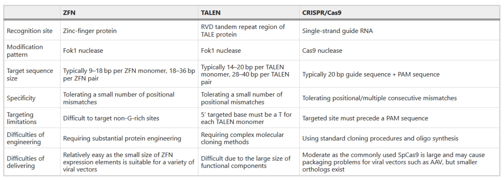

Combining homologous recombination and mismatch repair in eukaryotes
Gene Conversion: In the mismatch region, a->A and A->a will both have 50% probability to happen.
Heteroduplex mismatch will happen before the newly synthesized region.
Poll Everyehere
- Which of the regions represent heteroduplex DNA that may contain mismatches?
- A. 1 and 6
- B. 2 and 5
- C. 3 and 4
- D. 1, 2, and 3
- E. 4, 5, and 6
2. If GEN1 (the eukaryotic equivalent of ruvC) makes nicks at arrows 9 and 10, where would additional nicks need to occur so that regions 1 and 6 would lie on the same chromosomes after repair?
- A. 7 and 13
- B. 7 and 14
- C. 8 and 14
- D. 11 and 12
So it is a crossover cut.
Homologus recombination in mitotically dividing cells
Synthesis-dependent strand annealing(SDSA)
Unwind the recombination intermediates before ligation occurs.
When homologous recombination repair goes bad: other connections to human health
BRCA1 promotes DNA resection (creates single-stranded DNA)
BRCA2 helps load RAD51 onto ssDNA
BRCA mutations increase breast and ovarian cancer risk
Geome Editing
A New Age for Genome Editing
- ZFNs – zinc finger nucleases
- TALENs – transcription activator-like effector nucleases
- CRISPR - clustered regularly interspaced short palindromic repeats
Timeline of Genome Wditing Techonologies

Zinc Finger Nucleases
NHEJ(non homologous end joint)
HDR(homologous DNA repair)
It has the risk to cut other genes.
TALENs
Cloning the TALENs is vert difficult. 34*~20
TAL effector repeat domains are ~34 amino acids each Derived from Xanthomonas (plant pathogen)
CRISPR-Cas
The bacteria will record the invaded virus's DNA and store it in library. When the virus is going to invade, the bacteria will recognize the virus DNA and cut it.
Adaption of the Type II Cas9 System
Comparison

The CRISPR nuclease Cas9 is targeted by a short guide RNA that recognizes the target DNA via Watson-Crick base pairing.
How can CRISPR be used to modify genomes

CRISPR-Cas9 Genome Editing
Next Week's Joural Club Paper
- HBV virus exist in cells in cccDNA form.
- CRISPR-Cas9 targeting of hepatitis B virus
- Using small molecules to improve Cas9 cutting efficiency and potentially clear the virus.
Using Cas9 Nickease to Reduce Off-target Effects
The use of 2 different sgRNAs greatly reduces the probability that a double-strand break will be made in an off-target site
Using CRISPR to target other proteins to the genome
dCas9 = catalytically dead Cas9
It can still be targeted to specific DNA sequences using a sgRNA
Can be used to:
- activate transcription
- repress transcription
- mark a locus with GFP - edit bases